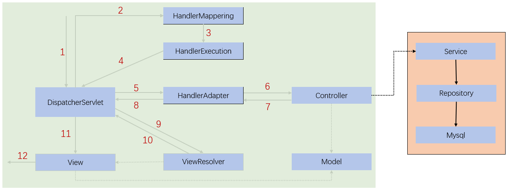

MVC
MVC是 模型（Model）、视图（View）、控制器（Controller）的简写，是一种软件设计规范。以将业务逻辑、数据、显示分离的方式来组织代码，其主要作用是降低视图与业务逻辑间的双向耦合。MVC不是一种设计模式，而是一种架构模式。
- Model：数据模型，提供要展示的数据，因此包含数据（Dao）和行为（Service）。
- View：负责进行模型的展示，一般就是页面。
- Controller：接收用户请求，委托给模型进行处理，处理完毕后把返回的模型数据返回给视图，由视图负责展示。
SpringMVC概述
SpringMVC是Spring Framework的一部分，是基于Java实现MVC的轻量级Web框架。特点：
- 轻量级，简单易学
- 高效，基于请求响应的MVC框架
- 与Spring兼容性好，无缝结合
约定优于配置- 功能强大：RESTFul、数据验证、格式化、本地化、主题等
- 简介灵活
原理
SpringMVC框架以请求为驱动，围绕 DispatcherServlet（调度servlet，本质上是一个servlet，它继承自HttpServlet）设计，其作用是将请求分发到不同的处理器。

图为SpringMVC的一个较完整的流程图，实线表示SpringMVC框架提供的技术，不需要开发者实现，虚线表示需要开发者实现。
简要分析执行流程：
- 获取用户请求对应的url
- DispatcherServlet调用HandlerMapping（处理器映射器），HandlerMapping根据请求的url查找Handler。
- HandlerExecution表示具体的Handler，其主要作用是根据url查找控制器。
- HandlerExecution将解析后的信息传递给DispatcherServlet，如解析控制器映射等。
- HandlerAdapter表示处理器适配器，其按照特定的规则去执行Handler。
- Handler让具体的Controller执行。
- Controller将具体的执行信息返回给HandlerAdapter，如ModelAndView。
- HandlerAdapter将视图逻辑名或模型传递给DispatcherServlet。
- DispatcherServlet调用视图解析器（ViewResolver）来解析HandlerAdapter传递的逻辑视图名。
- 视图解析器将解析的逻辑视图名传给DispatcherServlet。
- DispatcherServlet根据视图解析器解析的视图结果，调用具体的视图。
- 最终视图呈现给用户。
第一个SpringMVC程序
添加web的支持，配置web.xml，注册DispatcherServlet。
<?xml version="1.0" encoding="UTF-8"?>
<web-app xmlns="http://xmlns.jcp.org/xml/ns/javaee"
xmlns:xsi="http://www.w3.org/2001/XMLSchema-instance"
xsi:schemaLocation="http://xmlns.jcp.org/xml/ns/javaee http://xmlns.jcp.org/xml/ns/javaee/web-app_4_0.xsd"
version="4.0">
<servlet>
<servlet-name>springmvc</servlet-name>
<servlet-class>org.springframework.web.servlet.DispatcherServlet</servlet-class>
<init-param>
<param-name>contextConfigLocation</param-name>
<param-value>classpath:springmvc-servlet.xml</param-value>
</init-param>
<load-on-startup>1</load-on-startup>
</servlet>
<servlet-mapping>
<servlet-name>springmvc</servlet-name>
<url-pattern>/</url-pattern>
</servlet-mapping>
</web-app>
|
<url-pattern>/</url-pattern>不会匹配.jsp，只针对我们编写的请求，即：.jsp不会进入DispatcherServlet类 。
<url-pattern>/*</url-pattern>会匹配 *.jsp，会出现返回 jsp 视图时再次进入DispatcherServlet类，导致找不到对应的controller，所以报404。
编写SpringMVC的配置文件，添加处理器映射器、处理器适配器及视图解析器
<?xml version="1.0" encoding="UTF-8"?>
<beans xmlns="http://www.springframework.org/schema/beans"
xmlns:xsi="http://www.w3.org/2001/XMLSchema-instance"
xsi:schemaLocation="http://www.springframework.org/schema/beans
https://www.springframework.org/schema/beans/spring-beans.xsd">
<bean class="org.springframework.web.servlet.handler.BeanNameUrlHandlerMapping"/>
<bean class="org.springframework.web.servlet.mvc.SimpleControllerHandlerAdapter"/>
<bean class="org.springframework.web.servlet.view.InternalResourceViewResolver" id="InternalResourceViewResolver">
<property name="prefix" value="/WEB-INF/jsp/"/>
<property name="suffix" value=".jsp"/>
</bean>
</beans>
|
编写Controller，要么实现Controller接口，要么增加注解。
public class HelloController implements Controller {
@Override
public ModelAndView handleRequest(HttpServletRequest request, HttpServletResponse response) throws Exception {
ModelAndView mv = new ModelAndView();
mv.addObject("msg","helloSpringMVC");
mv.setViewName("hello");
return mv;
}
}
|
将Controller类交给SpringIOC容器，注册bean
<bean id="/hello" class="com.controller.HelloController"/>
|
编写对应的jsp页面，显示ModelandView存放的数据
<%@ page contentType="text/html;charset=UTF-8" language="java" %>
<html>
<head>
<title>Title</title>
</head>
<body>
${msg}
</body>
</html>
|
配置Tomcat启动测试
若访问出现404，先查看控制台输出，看一下是否缺少jar包。如果jar包存在，显示无法输出，就在IDEA的项目发布中，添加lib依赖，然后重启Tomcat。
注解版
编写配置文件
<?xml version="1.0" encoding="UTF-8"?>
<beans xmlns="http://www.springframework.org/schema/beans"
xmlns:xsi="http://www.w3.org/2001/XMLSchema-instance"
xmlns:context="http://www.springframework.org/schema/context"
xmlns:mvc="http://www.springframework.org/schema/mvc"
xsi:schemaLocation="http://www.springframework.org/schema/beans
http://www.springframework.org/schema/beans/spring-beans.xsd
http://www.springframework.org/schema/context
https://www.springframework.org/schema/context/spring-context.xsd
http://www.springframework.org/schema/mvc
https://www.springframework.org/schema/mvc/spring-mvc.xsd">
<context:component-scan base-package="com.controller"/>
<mvc:default-servlet-handler />
<mvc:annotation-driven />
<bean class="org.springframework.web.servlet.view.InternalResourceViewResolver"
id="internalResourceViewResolver">
<property name="prefix" value="/WEB-INF/jsp/" />
<property name="suffix" value=".jsp" />
</bean>
</beans>
|
创建Controller
@Controller
@RequestMapping("/HelloController")
public class HelloController {
@RequestMapping("/hello")
public String hello(Model model){
model.addAttribute("msg","HelloSpringMVC");
return "hello";
}
}
|
使用springMVC必须配置的三大件：处理器映射器、处理器适配器、视图解析器
通常，我们只需要手动配置视图解析器，而处理器映射器和处理器适配器只需要开启注解驱动即可。
控制器
控制器负责解析用户的请求并将其转换为一个模型返回给视图解析器，可以通过 实现接口 或 使用注解 两种方法来实现。
实现Controller接口，该接口在org.springframework.web.servlet.mvc包下，接口中只有一个方法：
public interface Controller {
ModelAndView handleRequest(HttpServletRequest var1, HttpServletResponse var2) throws Exception;
}
|
编写Controller类并实现该接口，编写完毕后，需要去Spring配置文件中 注册 请求的bean。name或者id对应请求路径，class对应处理请求的类。
只要实现了Controller接口的类，说明这就是一个控制器。缺点就是一个控制器中只有一个方法，如果要多个方法则需要定义多个Controller，定义的方式比较麻烦。
注意：这种方式就算只保留视图解析器也能运行。
使用注解@Controller，该注解用于声明该类是一个控制器，该方式需要在配置文件中声明组件扫描。
注意：这种方式就算只保留视图解析器以及注解扫描也能运行。
RequestMapping
@RequestMapping注解用于映射url到控制器类或一个特定的处理程序方法，即可用于类或方法上。用于类上，表示类中的所有响应请求的方法都是以该地址作为父路径。
@Controller
@RequestMapping("/c3")
public class Controller3 {
@RequestMapping("/test1")
public String test(){
return "test";
}
}
|
需要多级路径时也可以直接注解在方法上，例如：@RequestMapping(“/c3/test1”)
结果跳转方式
ModelAndView
设置ModelAndView对象，根据view的名称和视图解析器可跳到指定的页面。
页面 : {视图解析器前缀} + viewName +{视图解析器后缀}
此时控制器采用实现接口的方式编写。
ServletAPI
通过设置ServletAPI , 不需要视图解析器：
- 通过HttpServletResponse进行输出；
- 通过HttpServletResponse实现重定向，
不能传递数据；
- 通过HttpServletRequest实现转发，
不改变地址栏；
@Controller
public class ResultGo {
@RequestMapping("/result/t1")
public void test1(HttpServletRequest req, HttpServletResponse rsp) throws IOException {
rsp.getWriter().println("Hello,Spring BY servlet API");
}
@RequestMapping("/result/t2")
public void test2(HttpServletRequest req, HttpServletResponse rsp) throws IOException {
rsp.sendRedirect("/index.jsp");
}
@RequestMapping("/result/t3")
public void test3(HttpServletRequest req, HttpServletResponse rsp) throws Exception {
req.setAttribute("msg","/result/t3");
req.getRequestDispatcher("/WEB-INF/jsp/test.jsp").forward(req,rsp);
}
}
|
SpringMVC实现转发和重定向
有视图解析器
@RequestMapping("/t1")
public String test1(){
return "redirect:/index.jsp";
}
@RequestMapping("/t2")
public String test(){
return "test1";
}
|
无视图解析器
@Controller
public class ResultSpringMVC {
@RequestMapping("/t1")
public String test1(){
return "/WEB-INF/jsp/test1.jsp";
}
@RequestMapping("/t3")
public String test3(){
return "redirect:/index.jsp";
}
}
|
数据处理
处理提交数据
请求地址中参数名和处理方法的参数名 一致，此时能直接得到对应的值。若不存在对应的参数，则方法中的参数值为默认值。
请求地址中参数名和处理方法的参数名 不一致，使用@RequestParam注解进行参数对应。
@RequestMapping("/hello")
public String hello(@RequestParam("username") String name){
System.out.println(name);
return "hello";
}
|
无论两者是否对应，都使用注解，表示其需要接收前端传递的参数。使用注解后，请求地址中必须存在对应的参数，否则会报错。
若提交的是一个 对象，即对象相应属性，方法参数使用对象即可。此时前端传递的参数名和对象属性名必须一致，否则对应的属性为默认值。
数据显示到前端
方式一：通过ModelAndView
@RequestMapping("/t4")
public ModelAndView test4(){
ModelAndView mv = new ModelAndView();
mv.addObject("msg","张三");
mv.setViewName("test1");
return mv;
}
|
方式二：通过Model
方式三：通过ModelMap
@RequestMapping("/t4")
public String test4(ModelMap map){
map.addAttribute("msg","李四");
return "test1";
}
|
乱码问题
解决前端传递的数据为乱码的问题，在web.xml中配置SpringMVC的乱码过滤器
<filter>
<filter-name>encoding</filter-name>
<filter-class>org.springframework.web.filter.CharacterEncodingFilter</filter-class>
<init-param>
<param-name>encoding</param-name>
<param-value>utf-8</param-value>
</init-param>
</filter>
<filter-mapping>
<filter-name>encoding</filter-name>
<url-pattern>/*</url-pattern>
</filter-mapping>
|
注意：此处是 “/*”。
RestFul风格
RestFul是一种资源定位及资源操作的风格。不是标准也不是协议，只是一种风格。基于这个风格设计的软件可以更简洁，更有层次，更易于实现缓存等机制。
传统方式操作资源，通过 不同的参数 来实现不同的效果，方法单一，post和get。
http://127.0.0.1/item/queryItem.action?id=1——查询，GET
http://127.0.0.1/item/saveItem.action——新增，POST
http://127.0.0.1/item/updateItem.action——更新，POST
http://127.0.0.1/item/deleteItem.action?id=1——删除，GET或POST
使用RestFul操作资源，可以通过 不同的请求方式来实现不同的效果！如下：请求地址一样，但是 功能不同。
http://127.0.0.1/item/1——查询，GEThttp://127.0.0.1/item——新增，POSThttp://127.0.0.1/item——更新，PUThttp://127.0.0.1/item/1——删除，DELETE
在SpringMVC中可以使用 @PathVariable 注解，让方法参数的值对应绑定到一个URL模板变量上，同时参数也可以从URL上获取传递的值。
@Controller
public class RestFulController {
@RequestMapping("/add/{a}/{b}")
public String test(@PathVariable int a,@PathVariable int b, Model model){
model.addAttribute("msg","结果为："+(a+b));
return "test1";
}
}
|
使用 method属性 指定请求类型，用于约束请求的类型，可以收窄请求范围。指定请求谓词的类型如GET，POST，HEAD，OPTIONS，PUT，PATCH，DELETE，TRACE等。
@RequestMapping(value = "/add/{a}/{b}", method = RequestMethod.GET)
public String test(@PathVariable int a,@PathVariable String b, Model model){
model.addAttribute("msg","结果为："+(a+b));
return "test1";
}
|
只有请求类型相同时才能访问，若请求类型不相同，会报错405。
所有的地址栏请求默认是 GET类型。
可以把value改为path，即@RequestMapping(path = “/add/{a}/{b}”, method = …)
方法级别的注解变体有如下几个
- @GetMapping
- @PostMapping
- @PutMapping
- @DeleteMapping
- @PatchMapping
@GetMapping("/add/{a}/{b}")
public String test(@PathVariable int a,@PathVariable String b, Model model){
model.addAttribute("msg","结果为1："+(a+b));
return "test1";
}
@PostMapping("/add/{a}/{b}")
public String test2(@PathVariable int a,@PathVariable String b, Model model){
model.addAttribute("msg","结果为2："+(a+b));
return "test1";
}
|
使用路径变量的好处
- 使路径变得更加简洁；
- 获得参数更加方便，框架会自动进行类型转换。
- 通过路径变量的类型可以约束访问参数，如果类型不一样，则访问不到对应的请求方法。例如需要的两个参数都是int，而访问的路径是/add/1/a，则请求失败，因为路径与方法不匹配，而不是参数转换失败。
JSON
概念：JSON（JavaScript Object Notation，JS对象标记）是一种轻量级的数据交换格式，采用完全独立于编程语言的文本格式来存储和表示数据，简洁和清晰的层次结构使得 JSON 成为理想的数据交换语言，易于人阅读和编写，同时也易于机器解析和生成，并有效地提升网络传输效率。
在 JavaScript 语言中，一切都是对象。因此，任何JavaScript支持的类型都可以通过 JSON 来表示。
关于 JSON 和 JavaScript 对象，可以理解为 JSON 是 JavaScript 对象的字符串表示法，它使用文本表示一个 JS 对象的信息，本质是一个 字符串。
var obj = {a: 'Hello', b: 'World'};
var json = '{"a": "Hello", "b": "World"}';
|
JSON 和 JavaScript 对象互转
user = {"name":"zs"}
json = JSON.stringify(user)
var obj = JSON.parse(json);
|
Controller返回JSON数据
Jackson：json解析工具，需要导入对应依赖
<dependency>
<groupId>com.fasterxml.jackson.core</groupId>
<artifactId>jackson-databind</artifactId>
<version>2.13.2.2</version>
</dependency>
|
编写Controller
@Controller
public class UserController {
@RequestMapping("/j1")
@ResponseBody
public String json1() throws JsonProcessingException {
ObjectMapper mapper = new ObjectMapper();
User user = new User(1,"张三",18);
String s = mapper.writeValueAsString(user);
return s;
}
}
|
可以在类上使用@RestController注解（@RestController是@Controller和@ResponseBody两个注解的结合体）。使用该注解后，该类下的方法返回的都是字符串，此时就不需要为每个方法都添加@ResponseBody。
测试发现乱码，需要设置一下它的编码格式为utf-8，以及它返回的类型，通过@RequestMaping的produces属性来实现
@RequestMapping(value="/j1",produces = "application/json;charset=utf-8")
|
多请求时可以通过Spring配置统一配置。在springmvc的配置文件上添加一段消息StringHttpMessageConverter转换配置：
<mvc:annotation-driven>
<mvc:message-converters register-defaults="true">
<bean class="org.springframework.http.converter.StringHttpMessageConverter">
<constructor-arg value="UTF-8"/>
</bean>
<bean class="org.springframework.http.converter.json.MappingJackson2HttpMessageConverter">
<property name="objectMapper">
<bean class="org.springframework.http.converter.json.Jackson2ObjectMapperFactoryBean">
<property name="failOnEmptyBeans" value="false"/>
</bean>
</property>
</bean>
</mvc:message-converters>
</mvc:annotation-driven>
|
这部分乱码处理的是 后台返回前端 所带来的乱码，使用时需要引入 Jackson的依赖。
对于时间对象，返回的是当前日期的毫秒数，即Jackson默认是会把时间转成 时间戳 的形式。
@RequestMapping("/j3")
public String json3() throws JsonProcessingException {
Date date = new Date();
return new ObjectMapper().writeValueAsString(date);
}
|
要想得到日期格式，可以自定义日期格式或使用ObjectMapper
{
Date date = new Date();
SimpleDateFormat sdf = new SimpleDateFormat("yyyy-MM-dd HH:mm:ss");
return new ObjectMapper().writeValueAsString(sdf.format(date));
}
{
ObjectMapper mapper = new ObjectMapper();
mapper.configure(SerializationFeature.WRITE_DATES_AS_TIMESTAMPS, false);
SimpleDateFormat sdf = new SimpleDateFormat("yyyy-MM-dd HH:mm:ss");
mapper.setDateFormat(sdf);
Date date = new Date();
return mapper.writeValueAsString(sdf.format(date));
}
|
抽取为工具类
package com.Utils;
import com.fasterxml.jackson.core.JsonProcessingException;
import com.fasterxml.jackson.databind.ObjectMapper;
import com.fasterxml.jackson.databind.SerializationFeature;
import java.text.SimpleDateFormat;
public class JsonUtils {
public static String getJson(Object object){
return getJson(object,"yyyy-MM-dd hh:mm:ss");
}
public static String getJson(Object object, String dataFormat){
ObjectMapper mapper = new ObjectMapper();
mapper.configure(SerializationFeature.WRITE_DATES_AS_TIMESTAMPS, false);
SimpleDateFormat sdf = new SimpleDateFormat(dataFormat);
mapper.setDateFormat(sdf);
try {
return mapper.writeValueAsString(object);
} catch (JsonProcessingException e) {
e.printStackTrace();
}
return null;
}
}
|
使用示例：
@RequestMapping("/j3")
public String json3(){
Date date = new Date();
return JsonUtils.getJson(date,"yyyy-MM-dd hh:mm:ss");
}
|
也可以使用 FastJson，它是阿里开发的一款专门用于Java开发的包，可以方便的实现json对象与JavaBean对象的转换。
导入依赖
<dependency>
<groupId>com.alibaba</groupId>
<artifactId>fastjson</artifactId>
<version>1.2.78</version>
</dependency>
|
fastjson 三个主要的类：
方法
- java对象 -> JSON字符串：JSON.toJSONString(list)
- JSON字符串 -> java对象：JSON.parseObject(str2,User.class)
- java对象 -> JSON对象：(JSONObject)JSON.toJSON(user1)
- JSON对象 -> java对象：JSON.toJavaObject(jsonObject1, User.class)
SSM整合
步骤：
创建数据库 -> 创建项目 -> 导入依赖 -> 编写配置文件（database.properties、mybatis-config.xml（可省略）、applicationContext.xml） -> pojo（实体类） -> dao（接口以及接口对应的mapper.xml） -> service（接口以及实现类，在实现类中调用dao层） -> spring整合mybatis（spring-dao.xml） -> spring整合service（spring-service.xml） -> 增加web支持 -> springmvc（web.xml以及spring-mvc.xml） -> controller和视图层编写
依赖：junit、数据库驱动、连接池、jsp、jstl、servlet、mybatis、spring、lombok
数据库配置
jdbc:mysql://localhost:3306/dbName?userUnicode=true&characterEncoding=UTF-8&useSSL=false&serverTimezone=Asia/Shanghai&allowPublicKeyRetrieval=true
|
数据库配置文件 database.properties
jdbc.driver=com.mysql.jdbc.Driver
jdbc.url=jdbc:mysql://localhost:3306/dbName?useSSL=true&useUnicode=true&characterEncoding=utf8
jdbc.username=root
jdbc.password=123456
|
Spring整合Mybatis的相关的配置文件 spring-dao.xml
<?xml version="1.0" encoding="UTF-8"?>
<beans xmlns="http://www.springframework.org/schema/beans"
xmlns:xsi="http://www.w3.org/2001/XMLSchema-instance"
xmlns:context="http://www.springframework.org/schema/context"
xsi:schemaLocation="http://www.springframework.org/schema/beans
http://www.springframework.org/schema/beans/spring-beans.xsd
http://www.springframework.org/schema/context
https://www.springframework.org/schema/context/spring-context.xsd">
<context:property-placeholder location="classpath:database.properties"/>
<bean id="dataSource" class="com.mchange.v2.c3p0.ComboPooledDataSource">
<property name="driverClass" value="${jdbc.driver}"/>
<property name="jdbcUrl" value="${jdbc.url}"/>
<property name="user" value="${jdbc.username}"/>
<property name="password" value="${jdbc.password}"/>
<property name="maxPoolSize" value="30"/>
<property name="minPoolSize" value="10"/>
<property name="autoCommitOnClose" value="false"/>
<property name="checkoutTimeout" value="10000"/>
<property name="acquireRetryAttempts" value="2"/>
</bean>
<bean id="sqlSessionFactory" class="org.mybatis.spring.SqlSessionFactoryBean">
<property name="dataSource" ref="dataSource"/>
<property name="configLocation" value="classpath:mybatis-config.xml"/>
</bean>
<bean class="org.mybatis.spring.mapper.MapperScannerConfigurer">
<property name="sqlSessionFactoryBeanName" value="sqlSessionFactory"/>
<property name="basePackage" value="com.kuang.dao"/>
</bean>
</beans>
|
MapperScannerConfigurer自动扫描，将Mapper接口生成代理注入到Spring。basePackage 属性是让你为映射器接口文件设置基本的包路径。你可以使用分号或逗号作为分隔符设置多于一个的包路径。每个映射器将会在指定的包路径中递归地被搜索到。
注意：没有必要去指定SqlSessionFactory或SqlSessionTemplate，因为MapperScannerConfigurer将会创建MapperFactoryBean，之后自动装配。但是，如果你使用了一个以上的DataSource，那么自动装配可能会失效 。
Spring整合service：spring-service.xml
<?xml version="1.0" encoding="UTF-8"?>
<beans xmlns="http://www.springframework.org/schema/beans"
xmlns:xsi="http://www.w3.org/2001/XMLSchema-instance"
xmlns:context="http://www.springframework.org/schema/context"
xsi:schemaLocation="http://www.springframework.org/schema/beans
http://www.springframework.org/schema/beans/spring-beans.xsd
http://www.springframework.org/schema/context
http://www.springframework.org/schema/context/spring-context.xsd">
<context:component-scan base-package="com.kuang.service" />
<bean id="BookServiceImpl" class="com.kuang.service.BookServiceImpl">
<property name="bookMapper" ref="bookMapper"/>
</bean>
<bean id="transactionManager" class="org.springframework.jdbc.datasource.DataSourceTransactionManager">
<property name="dataSource" ref="dataSource" />
</bean>
</beans>
|
web.xml
<?xml version="1.0" encoding="UTF-8"?>
<web-app xmlns="http://xmlns.jcp.org/xml/ns/javaee"
xmlns:xsi="http://www.w3.org/2001/XMLSchema-instance"
xsi:schemaLocation="http://xmlns.jcp.org/xml/ns/javaee http://xmlns.jcp.org/xml/ns/javaee/web-app_4_0.xsd"
version="4.0">
<servlet>
<servlet-name>DispatcherServlet</servlet-name>
<servlet-class>org.springframework.web.servlet.DispatcherServlet</servlet-class>
<init-param>
<param-name>contextConfigLocation</param-name>
<param-value>classpath:applicationContext.xml</param-value>
</init-param>
<load-on-startup>1</load-on-startup>
</servlet>
<servlet-mapping>
<servlet-name>DispatcherServlet</servlet-name>
<url-pattern>/</url-pattern>
</servlet-mapping>
<filter>
<filter-name>encodingFilter</filter-name>
<filter-class>
org.springframework.web.filter.CharacterEncodingFilter
</filter-class>
<init-param>
<param-name>encoding</param-name>
<param-value>utf-8</param-value>
</init-param>
</filter>
<filter-mapping>
<filter-name>encodingFilter</filter-name>
<url-pattern>/*</url-pattern>
</filter-mapping>
<session-config>
<session-timeout>15</session-timeout>
</session-config>
</web-app>
|
spring-mvc.xml
<?xml version="1.0" encoding="UTF-8"?>
<beans xmlns="http://www.springframework.org/schema/beans"
xmlns:xsi="http://www.w3.org/2001/XMLSchema-instance"
xmlns:context="http://www.springframework.org/schema/context"
xmlns:mvc="http://www.springframework.org/schema/mvc"
xsi:schemaLocation="http://www.springframework.org/schema/beans
http://www.springframework.org/schema/beans/spring-beans.xsd
http://www.springframework.org/schema/context
http://www.springframework.org/schema/context/spring-context.xsd
http://www.springframework.org/schema/mvc
https://www.springframework.org/schema/mvc/spring-mvc.xsd">
<context:component-scan base-package="com.kuang.controller" />
<mvc:annotation-driven />
<mvc:default-servlet-handler/>
<bean class="org.springframework.web.servlet.view.InternalResourceViewResolver">
<property name="viewClass" value="org.springframework.web.servlet.view.JstlView" />
<property name="prefix" value="/WEB-INF/jsp/" />
<property name="suffix" value=".jsp" />
</bean>
</beans>
|
Spring配置整合文件：applicationContext.xml
<?xml version="1.0" encoding="UTF-8"?>
<beans xmlns="http://www.springframework.org/schema/beans"
xmlns:xsi="http://www.w3.org/2001/XMLSchema-instance"
xsi:schemaLocation="http://www.springframework.org/schema/beans
http://www.springframework.org/schema/beans/spring-beans.xsd">
<import resource="spring-dao.xml"/>
<import resource="spring-service.xml"/>
<import resource="spring-mvc.xml"/>
</beans>
|
拦截器
SpringMVC的处理器拦截器类似于Servlet开发中的过滤器Filter，用于对处理器进行预处理和后处理。开发者可以自己定义一些拦截器来实现特定的功能。
过滤器与拦截器的区别：拦截器是AOP思想的具体应用。
过滤器
- servlet规范中的一部分，任何java web工程都可以使用
- 在url-pattern中配置了/*之后，可以对所有要访问的资源进行拦截
拦截器
自定义拦截器，需要实现HandlerInterceptor接口。编写拦截器
public class MyInterceptor implements HandlerInterceptor {
public boolean preHandle(HttpServletRequest httpServletRequest, HttpServletResponse httpServletResponse, Object o) throws Exception {
System.out.println("------------处理前------------");
return true;
}
public void postHandle(HttpServletRequest httpServletRequest, HttpServletResponse httpServletResponse, Object o, ModelAndView modelAndView) throws Exception {
System.out.println("------------处理后------------");
}
public void afterCompletion(HttpServletRequest httpServletRequest, HttpServletResponse httpServletResponse, Object o, Exception e) throws Exception {
System.out.println("------------清理------------");
}
}
|
只需重写第一个方法即可，当返回false时可进行重定向或转发。
在springmvc的配置文件中配置拦截器
<mvc:interceptors>
<mvc:interceptor>
<mvc:mapping path="/**"/>
<bean class="com.kuang.interceptor.MyInterceptor"/>
</mvc:interceptor>
</mvc:interceptors>
|
文件上传与下载
前端表单要求：为了能上传文件，必须将表单的method设置为POST，并将enctype设置为 multipart/form-data。只有在这样的情况下，浏览器才会把用户选择的文件以二进制数据发送给服务器。
对表单中的 enctype 属性做个详细的说明：
- application/x-www=form-urlencoded：默认方式，只处理表单域中的 value 属性值，采用这种编码方式的表单会将表单域中的值处理成 URL 编码方式。
- multipart/form-data：这种编码方式会以二进制流的方式来处理表单数据，这种编码方式会把文件域指定文件的内容也封装到请求参数中，不会对字符编码。
- text/plain：除了把空格转换为 “+” 号外，其他字符都不做编码处理，这种方式适用直接通过表单发送邮件。
<form action="" enctype="multipart/form-data" method="post">
<input type="file" name="file"/>
<input type="submit">
</form>
|
文件上传，导入依赖
<dependency>
<groupId>commons-fileupload</groupId>
<artifactId>commons-fileupload</artifactId>
<version>1.4</version>
</dependency>
<dependency>
<groupId>javax.servlet</groupId>
<artifactId>javax.servlet-api</artifactId>
<version>4.0.1</version>
</dependency>
|
配置bean：multipartResolver
<bean id="multipartResolver" class="org.springframework.web.multipart.commons.CommonsMultipartResolver">
<property name="defaultEncoding" value="utf-8"/>
<property name="maxUploadSize" value="10485760"/>
<property name="maxInMemorySize" value="40960"/>
</bean>
|
前端页面
<form action="/upload" enctype="multipart/form-data" method="post">
<input type="file" name="file"/>
<input type="submit">
</form>
|
Controller
@RequestMapping("/upload")
public String fileUpload(@RequestParam("file") CommonsMultipartFile file , HttpServletRequest request) throws IOException {
String uploadFileName = file.getOriginalFilename();
if ("".equals(uploadFileName)){
return "redirect:/index.jsp";
}
System.out.println("上传文件名 : "+uploadFileName);
String path = request.getServletContext().getRealPath("/upload");
File realPath = new File(path);
if (!realPath.exists()){
realPath.mkdir();
}
System.out.println("上传文件保存地址："+realPath);
InputStream is = file.getInputStream();
OutputStream os = new FileOutputStream(new File(realPath,uploadFileName));
int len=0;
byte[] buffer = new byte[1024];
while ((len=is.read(buffer))!=-1){
os.write(buffer,0,len);
os.flush();
}
os.close();
is.close();
return "redirect:/index.jsp";
}
|
也可采用 file.Transto 来保存上传的文件
@RequestMapping("/upload2")
public String fileUpload2(@RequestParam("file") CommonsMultipartFile file, HttpServletRequest request) throws IOException {
String path = request.getServletContext().getRealPath("/upload");
File realPath = new File(path);
if (!realPath.exists()){
realPath.mkdir();
}
System.out.println("上传文件保存地址："+realPath);
file.transferTo(new File(realPath +"/"+ file.getOriginalFilename()));
return "redirect:/index.jsp";
}
|
文件下载步骤
- 设置 response 响应头
- 读取文件 – InputStream
- 写出文件 – OutputStream
- 执行操作
- 关闭流 （先开后关）
@RequestMapping("/download")
public String downloads(HttpServletResponse response ,HttpServletRequest request) throws Exception{
String path = request.getServletContext().getRealPath("/upload");
String fileName = "基础语法.jpg";
response.reset();
response.setCharacterEncoding("UTF-8");
response.setContentType("multipart/form-data");
response.setHeader("Content-Disposition",
"attachment;fileName="+URLEncoder.encode(fileName, "UTF-8"));
File file = new File(path,fileName);
InputStream input=new FileInputStream(file);
OutputStream out = response.getOutputStream();
byte[] buff =new byte[1024];
int index=0;
while((index= input.read(buff))!= -1){
out.write(buff, 0, index);
out.flush();
}
out.close();
input.close();
return null;
}
|
.jpg)
.jpg)
.jpg)
.jpg)